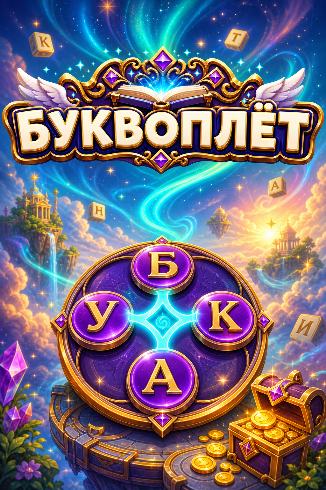

Буквоплёт

Буквоплёт — яркая словесная головоломка, в которой нужно составлять слова из букв, находить дополнительные комбинации и открывать новые уровни.
Проходите увлекательные задания, пополняйте запас монет, используйте подсказки и молоток в сложных ситуациях, открывайте случайные награды и собирайте коллекцию интересных фактов.
Особенности
- Более 5 000 уровней
- 250 интересных фактов с иллюстрациями
- Простая и понятная механика составления слов
- Дополнительные слова и награды за внимательность
- Подсказки и молоток для сложных уровней
- Ежедневные награды, колесо удачи и подарки
- Яркое сказочное оформление и плавные анимации
- Подходит и для коротких сессий, и для долгой игры
Соединяйте буквы, открывайте скрытые слова и двигайтесь дальше по уровням в своём темпе.
Каждая пройденная глава открывает новый интересный факт — о природе, животных, истории, науке, культуре и окружающем мире.
Если хочется одновременно расслабиться, потренировать внимание и узнать что-то новое, Буквоплёт легко освоить и приятно проходить.


App StoreGoogle Play